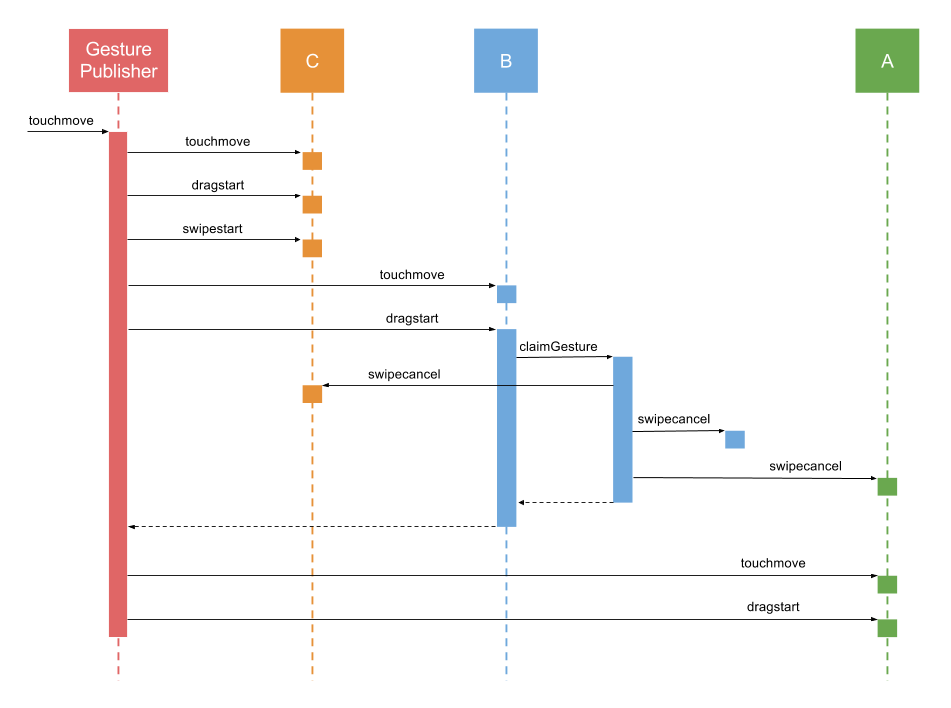

Gestures
Many classes have shortcut names used when creating (instantiating) a class with a
configuration object. The shortcut name is referred to as an alias (or xtype if the
class extends Ext.Component). The alias/xtype is listed next to the class name of
applicable classes for quick reference.
Framework classes or their members may be specified as private or protected. Else,
the class / member is public. Public, protected, and private are access
descriptors used to convey how and when the class or class member should be used.
Public classes and class members are available for use by any other class or application code and may be relied upon as a stable and persistent within major product versions. Public classes and members may safely be extended via a subclass.
Protected class members are stable public members intended to be used by the
owning class or its subclasses. Protected members may safely be extended via a subclass.
Private classes and class members are used internally by the framework and are not intended to be used by application developers. Private classes and members may change or be omitted from the framework at any time without notice and should not be relied upon in application logic.
static label next to the
method name. *See Static below.Below is an example class member that we can disect to show the syntax of a class member (the lookupComponent method as viewed from the Ext.button.Button class in this case).
Let's look at each part of the member row:
lookupComponent in this example)( item ) in this example)Ext.Component in this case). This may be omitted for methods that do not
return anything other than undefined or may display as multiple possible values
separated by a forward slash / signifying that what is returned may depend on the
results of the method call (i.e. a method may return a Component if a get method calls is
successful or false if unsuccessful which would be displayed as
Ext.Component/Boolean).PROTECTED in
this example - see the Flags section below)Ext.container.Container in this example). The source
class will be displayed as a blue link if the member originates from the current class
and gray if it is inherited from an ancestor or mixed-in class.view source in the example)item : Object in the example).undefined a "Returns" section
will note the type of class or object returned and a description (Ext.Component in the
example)Available since 3.4.0 - not pictured in
the example) just after the member descriptionDefaults to: false)The API documentation uses a number of flags to further commnicate the class member's function and intent. The label may be represented by a text label, an abbreviation, or an icon.
classInstance.method1().method2().etc();false is returned from
an event handler- Indicates a framework class
- A singleton framework class. *See the singleton flag for more information
- A component-type framework class (any class within the Ext JS framework that extends Ext.Component)
- Indicates that the class, member, or guide is new in the currently viewed version
- Indicates a class member of type config
- Indicates a class member of type property
- Indicates a class member of type
method
- Indicates a class member of type event
- Indicates a class member of type
theme variable
- Indicates a class member of type
theme mixin
- Indicates that the class, member, or guide is new in the currently viewed version
Just below the class name on an API doc page is a row of buttons corresponding to the types of members owned by the current class. Each button shows a count of members by type (this count is updated as filters are applied). Clicking the button will navigate you to that member section. Hovering over the member-type button will reveal a popup menu of all members of that type for quick navigation.
Getting and setter methods that correlate to a class config option will show up in the methods section as well as in the configs section of both the API doc and the member-type menus just beneath the config they work with. The getter and setter method documentation will be found in the config row for easy reference.
Your page history is kept in localstorage and displayed (using the available real estate) just below the top title bar. By default, the only search results shown are the pages matching the product / version you're currently viewing. You can expand what is displayed by clicking on the button on the right-hand side of the history bar and choosing the "All" radio option. This will show all recent pages in the history bar for all products / versions.
Within the history config menu you will also see a listing of your recent page visits. The results are filtered by the "Current Product / Version" and "All" radio options. Clicking on the button will clear the history bar as well as the history kept in local storage.
If "All" is selected in the history config menu the checkbox option for "Show product details in the history bar" will be enabled. When checked, the product/version for each historic page will show alongside the page name in the history bar. Hovering the cursor over the page names in the history bar will also show the product/version as a tooltip.
Both API docs and guides can be searched for using the search field at the top of the page.
On API doc pages there is also a filter input field that filters the member rows using the filter string. In addition to filtering by string you can filter the class members by access level, inheritance, and read only. This is done using the checkboxes at the top of the page.
The checkbox at the bottom of the API class navigation tree filters the class list to include or exclude private classes.
Clicking on an empty search field will show your last 10 searches for quick navigation.
Each API doc page (with the exception of Javascript primitives pages) has a menu view of metadata relating to that class. This metadata view will have one or more of the following:
Ext.button.Button class has an alternate class name of Ext.Button). Alternate class
names are commonly maintained for backward compatibility.Runnable examples (Fiddles) are expanded on a page by default. You can collapse and expand example code blocks individually using the arrow on the top-left of the code block. You can also toggle the collapse state of all examples using the toggle button on the top-right of the page. The toggle-all state will be remembered between page loads.
Class members are collapsed on a page by default. You can expand and collapse members using the arrow icon on the left of the member row or globally using the expand / collapse all toggle button top-right.
Viewing the docs on narrower screens or browsers will result in a view optimized for a smaller form factor. The primary differences between the desktop and "mobile" view are:
The class source can be viewed by clicking on the class name at the top of an API doc page. The source for class members can be viewed by clicking on the "view source" link on the right-hand side of the member row.
In addition to standard DOM events, Elements also fire synthesized "gesture" events. From a browser's perspective, there are 3 primary types of pointer, touch, and mouse events - start, move, and end:
| Event | Touch | Pointer | Mouse |
|---|---|---|---|
| Start | touchstart | pointerdown | mousedown |
| Move | touchmove | pointermove | mousemove |
| Stop | touchend | pointerup | mouseup |
Upon interpreting the sequence and timing of these events, the framework
can synthesize more complex events such as drag, swipe, longpress,
pinch, rotate, and tap. Ext JS applications can listen for gesture
events just like any other event, for example:
Ext.get('myElement').on('longpress', handlerFunction);
By intercepting all 3 types of events, mouse, pointer, and touch, Ext JS
allows any gesture to respond to any type of input. This means not only
that all gestures can be triggered using touch input, but all single-point
gestures (tap, swipe, etc.) can be triggered using a mouse as well. This
results in a gesture system that works seamlessly across devices regardless
of input type.
Ext JS currently supports the following gestures:
| Gesture | Events |
|---|---|
| Tap | tap, tapcancel |
| DoubleTap | singletap, doubletap |
| LongPress | longpress |
| Drag | dragstart, drag, dragend, dragcancel |
| Swipe | swipestart, swipe, swipecancel |
| Pinch | pinchstart, pinch, pinchend, pinchcancel |
| Rotate | rotatestart, rotate, rotateend, rotatecancel |
| EdgeSwipe | edgeswipe, edgeswipestart, edgeswipeend, edgeswipecancel |
In some cases applications need to listen for a gesture only when triggered by a specific type of input (mouse or touch) while ignoring the other. Ext JS provides a pointerType property on event objects for detecting the type of input that caused the event:
el.on('drag', function(e) {
if (e.pointerType === 'touch') {
// only handle touch-drag, and ignore mouse-drag
}
});
Events propagate through the framework in much the same way that DOM events propagate naturally in a browser. The difference is that the framework uses a delegated event model in order to support gesture recognition. This means that events are delivered to DOM elements in a separate propagation phase that occurs after the event has already completed propagation at the DOM level.
Event listeners that are directly attached to a DOM element will be invoked as the browser propagates the event through the DOM hierarchy. While it is helpful to understand the mechanics of native propagation, directly-attached DOM listeners in Ext JS should generally be avoided for the following reasons:
stopPropagation from a directly attached listener can prevent
gesture recognition from occurring, and prevent the synthetic propagation
that follows.In some cases, however, it may be necessary to attach a listener directly
to a DOM element, for example, to work around an issue when using Ext JS
together with other frameworks. This can be done using the delegated
event option.
el.on({
mousedown: function() {
Ext.Msg.alert('mousedown fired - native capture phase');
},
// careful when using delegated: false! this can have unintended side effects
delegated: false,
// use the capture option to listen in the capture phase
capture: true
});
DOM-level propagation occurs in two phases. First is the capture phase
in which the event is dispatched to each element from the top of the dom,
starting with the window object, all the way down to the element that was
the target of the event. After the capture phase the bubble phase occurs
in which the event is delivered first to the target element, then to its
ancestors until it reaches the top of the hierarchy. By default listeners
are fired during the bubble phase of propagation, but interested parties
can listen in the capture phase using the capture event option.
After the native event bubbles up to the window object, Ext JS performs gesture recognition. It may then synthesize one or more gesture events which then must be propagated throughout the DOM.
After the gesture recognition step is complete, the Framework will dispatch
the original DOM event, such as mousedown or touchmove along with any
gesture events, such as drag or swipe that were recognized as a result
of the DOM event. Like native propagation, synthetic propagation also
happens in two phases, a capture and a bubble phase.
Synthetic Propagation is the default for all event listeners within the framework and is recommended for applications using Ext JS. Using synthetic propagation ensures that the event fires in proper sequence with other events and avoids surprises when propagation is stopped for some reason. Developers do not need to do anything to enable synthetic propagation - the following listener uses synthetic propagation:
el.on('mousedown', function() {
Ext.Msg.alert('mousedown fired - synthetic bubble phase');
});
Once again, the capture option can be used to listen in the capture phase:
el.on({
mousedown: function() {
Ext.Msg.alert('mousedown fired - synthetic capture phase');
},
capture: true
});
Propagation can be stopped at any point during native or synthetic propagation, in either the capture or bubble phase. This prevents the event from being dispatched to any elements that have not yet received it, and prevents any pending capture or bubble phases from executing.
For example stopping propagation while the event is being dispatched to an element will prevent the event from bubbling up to that element’s parent:
parentEl.on('mousedown', function() {
// never fires because child element in bubble phase stops propagation of mousedown
Ext.Msg.alert('mousedown fired on child');
});
el.on('mousedown', function(e) {
Ext.Msg.alert('mousedown fired on child');
// immediately stop propagating the event any further
e.stopPropagation();
});
Stopping propagation during the capture phase cancels the entire bubble phase.
el.on({
mousedown: function(e) {
Ext.Msg.alert('mousedown - capture phase');
// stopping propagation during the capture phase causes the entire
// bubble phase to be skipped
e.stopPropagation();
},
capture: true
});
el.on('mousedown', function() {
// never fires because propagation of mousedown event was stopped prior to
// bubble phase
Ext.Msg.alert('mousedown - bubble phase');
});
When a gesture event is recognized it propagates through the DOM hierarchy along with the native event from which it was synthesized. In some cases recognition of multiple gestures can occur simultaneously. When this happens the gestures propagate together in a single set of capture/bubble phases.
For example consider a DOM hierarchy where element "A" contains element
"B", which contains element "C". Suppose a touchmove event fires on the
innermost element, "C", and this touchmove event meets the criteria for
both drag and swipe gestures.
Upon recognizing that both a drag and a swipe are occurring, the
Gesture Publisher publishes the touchmove, dragstart, and swipestart events,
and delivers all three events to each element in the hierarchy.
Sometimes elements in the same hierarchy can be listening for conflicting
gestures. In the above example, imagine that Element A is listening for
swipe and its child, element B, is listening for drag. When element B
handles the dragstart event, it may want to prevent the current gesture
from being interpreted as a swipe, since element A’s swipe handler may
interfere with element B’s drag handler. To do this it must "claim" the
drag gesture by invoking the claimGesture method on the event object.
el.on('dragstart', function(e) {
e.claimGesture();
});
Once claimGesture has been invoked on the dragstart event object, the
gesture is considered to be a drag gesture for the remainder of its
duration (until the user lifts their finger or releases the mouse button).
All events associated with the swipe gesture (swipestart, swipe, swipeend)
will cease to fire. Additionally, since the swipe event was cancelled, a
swipecancel event will be delivered to each element in the propagation
hierarchy.

Browsers handle certain touch gestures automatically and perform default actions in response such as scrolling or zooming. These actions are referred to as "touch actions". Browsers typically implement the following touch actions:
| Gesture | Touch Action |
|---|---|
| drag (horizontal) | horizontal scroll |
| drag (vertical) | vertical scroll |
| pinch | zoom |
| doubletap | zoom |
Ext JS applications that implement their own handling for any of these gestures may need to disable one or more of the browser's default touch actions while the gesture is being handled. For example a draggable element most likely will want to prevent scrolling of its container while it is being dragged. This can be achieved by setting the touchAction of the element.
// instruct the browser not to scroll while "el" is being dragged
el.setTouchAction({
panX: false,
panY: false
});
The concept of touch action within Ext JS is modeled after the CSS
touch-action property and supports the same values. Under the hood the
framework uses CSS touch-action where supported (on browsers that implement
Pointer Events), and emulates
the same behavior on Touch Events
browsers.
| CSS Name | Ext JS Name |
|---|---|
| pan-x | panX |
| pan-y | panY |
| pinch-zoom | pinchZoom |
| double-tap-zoom | doubleTapZoom |
When dealing with Components one should generally avoid calling
setTouchAction directly on their elements, and instead use the Component's
touchAction config instead. For example
the following panel's main element does not allow the browser to vertically
scroll, and its body element does not allow pinch-to-zoom or vertical scroll
since it inherits the touchAction of its parentNode via the DOM.
Ext.create('Ext.panel.Panel', {
touchAction: {
panY: false,
body: {
pinchZoom: false
}
},
listeners: {
drag: function(e) {
// handle drag on the panel's main element
},
pinch: {
element: 'body',
fn: function(e) {
// handle pinch on the panel's body element
}
}
}
});
On touch devices, it can sometimes be difficult to determine if a touch
should scroll or drag an object. A common way to determine the intent is
a time threshold. Press on the element for long enough and the gesture
transforms into a drag instead of a scroll. This can now be accomplished
using the new startDrag method available on longpress events.
el.on('longpress', function(e) {
e.startDrag();
});
On Pointer Events browsers (IE and Edge) one must also set the appropriate touch action on the element to prevent the browser from scrolling while the element is being dragged:
el.setTouchAction({
panX: false,
panY: false
});
On Touch Events browsers (Chrome
and Safari) it is not necessary to configure the touch action of the element
in order to prevent scrolling. Instead, one could call preventDefault
on the drag event object to prevent scrolling from occurring:
el.on('drag', function(e) {
e.preventDefault();
});
While the preventDefault approach to preventing scrolling does not work
on Pointer Events browsers, on Touch Events browsers it has the advantage
of allowing the determination of whether or not to scroll to be made
at run-time, rather than having to specify a touch action up front.
For apps that only need to support Touch Events browsers this can
be a useful technique, however, for cross-platform apps one must use
touchAction to prevent scrolling.
This guide assumes that viewport zoom is enabled in your app. This is typically done by adding the following meta tag to your html page:
<meta name="viewport" content="width=device-width, initial-scale=1, maximum-scale=10, user-scalable=yes">
Applications that wish to disable viewport zoom should replace that meta tag with the following:
<meta name="viewport" content="width=device-width, initial-scale=1, maximum-scale=1, user-scalable=no">
We recommend always enabling viewport zoom, as it improves accessibility for users that are visually impaired.


 Ext JS | Terms of Use
Ext JS | Terms of Use